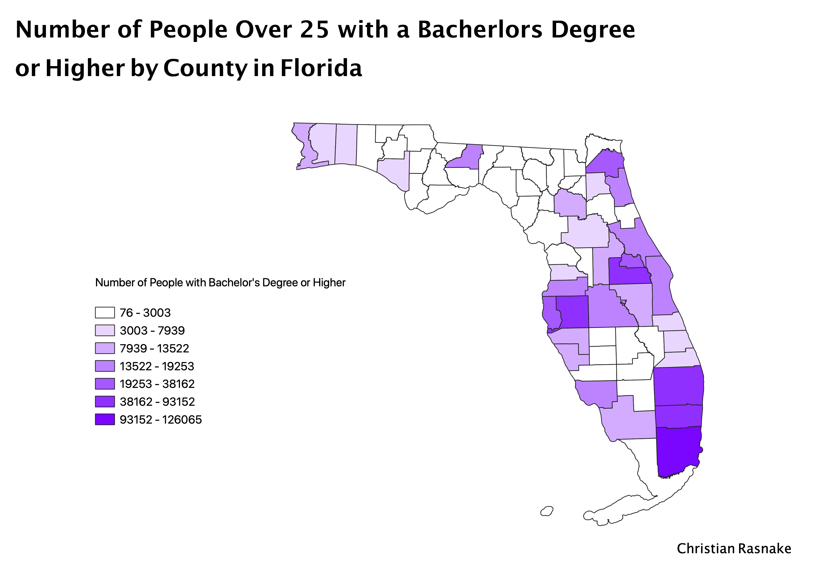

Homework 7: Census Data Choropleth Map
Christian Rasnake
For my choropleth map, I decided to look at the level of educational attainment in the state of Florida. There were many categories and metrics to choose from on the Census Data website, but I chose the total amount of the population years 25 and older who have earned a Bachelor's degree or higher by county in Florida. The lower values shown in white illustrate a lower number of people with a Bachelor's Degree or higher by County. These values graduatally turn to darker shades of purple as the number of people with education equivalent to a Bachelor's Degree or higher increases. I chose to distribute the data over "Natural Breaks" because it showed where the data naturally broke based on the numbers. It also made sense in terms of counting people, because the numbers did not get split into fractions. Therefore, this was the option that made most sense.

Data used for this project
CSV dataset
Link to shapefile